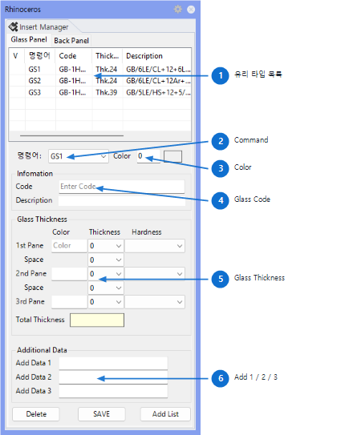

GsOpt
Opens or closes the Glass Type Option Panel. If the panel is already open, running the command again closes it.
Used to define and modify glass types (thickness, composition, name, etc.) before glass modeling. Types 1-9 configured here serve as the basis for glass generation by Gmd and GS1-GS9 commands, so type setup should precede glass modeling.

The panel has Glass / Back Panel / Vent tabs. The main items on the Glass tab are as follows.
| No | Item | Description |
|---|---|---|
| 1 | Glass Type List | Displays registered glass types in a table. Clicking an item auto-fills the settings below. |
| 2 | Command | Selects the Glass command to use during modeling (GS1 ~ GS9). |
| 3 | Color | Specifies the layer color. Enter a color code directly or click the color box to pick. |
| 4 | Glass Code | Enter the Glass Code and Description. Used when printing drawing annotations and lists. |
| 5 | Glass Composition (Group 1) | Sets Thickness, Hardness, and Space for each of Glass 1 / Glass 2 / Glass 3. Total Thickness is calculated and displayed automatically. |
| 6 | Additional Info (Group 3) | Add 1 / Add 2 / Add 3 — enter user-defined supplementary information. |
| Command | Description |
|---|---|
| Gmd | Glass surface modeling — creates glass surfaces on selected Brep faces. |
| GMDC | Clear glass surfaces — deletes all surfaces on Glass_XX layers. |
| GsNo | Glass numbering — automatically places number text on glass surfaces. |
| GRV | Glass transparency toggle — toggles Glass layer objects to 80% transparent. |